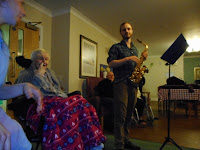
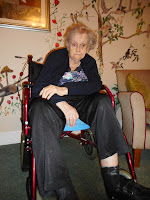
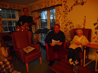
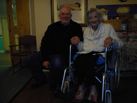

{kind=link}
Although, when I think about it, I don’t remember her chosen sound as being indulgent
in quite that way. She wasn’t a James Galway ('man with the golden flute') stylist. I remember her practising to achieve a purity of tone, perfecting that
delicate, powerful stream of air from the flute player’s lips that must hit
the far rim of the tone hole to create the column of air that’s then
deflected sideways along the narrow metal tube to provide the energy force that eventually powers the melody. (Flutes are bizarre when you think about them.) Mum would spend
hours practising her embouchure – that essential flute player’s mouth-shape, the basic skill in forming
and directing that vital stream of air.
I think I remember when she took up music: I was perhaps six years old and, after my youngest brother had been born, Mum had been away, as an inpatient in a mental hospital (I know now) -- a 'loony bin' as people called them then. I can remember sitting underneath the dining room table (it was a place I liked to be) and feeling the most profound relief because Mum was practising her recorder, therefore all would be well. That was how she started, with the descant recorder, then the treble and a most delightful teacher, a little lady called Christine Podd, as rounded and as bursting with generosity of spirit as her name suggests. Soon we too were going for lessons with 'Poddy' -- and playing 'Pease Pudding Hot;' from the Freda Dinn recorder book at Waldringfield Village Hall. (Who on earth could have been in the audience? I have no idea!)
Music was Mum's golden thread throughout my childhood and teenage years. She passed exams, gained a diploma, studied theory, went away on courses and once she had focussed all her talent and dedication on the flute, she had pupils and took part in concerts -- ran a weekly session for octogenarian farm workers who formed the 'St Michael's Band'. (They probably played 'Pease Pudding Hot', 'Pollywollydoodle', 'Where have you been all the day my Billy Boy?' -- all those Freda Dinn classics.) Then, thirty years ago, it finished. In my memory that was the day my father died. Not a directly causal
relationship, I don’t think. More that the gut-punching shock of his death, in the
middle of their preparations for divorce (she forgot that immediately and has never mentioned it since) knocked her so far 'out of her know' that she gave up the St Michael's Band, her pupils and her practicing and never returned to them again. It was as if a door in he life had slammed and
everything the other side was gone.
Nevertheless today, in the dementia suite, when she spits the
lumps of food which she is too afraid to swallow (or which she is using as
missiles to express her anger and rebellion) she does so with the power and
precision of a flute player, angling some small soggy fragment into an elegant
parabola that can cover impressive distances. And when we communicate these days it is most often through shared songs -- traditional folk tunes, shanties and hymns. On the days that her mental confusion is especially dissonant, she tries to self-comfort by singing but is angry and sarcastic if I attempt to join her. And if I try to initiate a song at her worst times, she covers her ears and shrinks from the sound. It makes me wish I had a deeper understanding of the concept of the 'noisy brain' (so relevant to some types of autism).
{kind=link}

Back on the train the song melody runs continuous through my head whether I’m checking my notes for the talk I'm travelling to give, or looking out of the window at the unfamiliar landscape. It’s unimpeded by my failure to remember more than a few snatches of the words or even string the phrases into a consecutive order. Presley's 'I can't help falling in love with you' is not a song that has ever previously been in my mind but last Sunday, in Willow Suite where Mum now lives, it was requested twice – first by Adrienne, a serene and beautiful lady who can neither move nor reliably speak but communicates with a sweet smile and movements of her crooked finger. The second request came from Addie, an agency carer who I’d not met before and may not meet again in the shifting world of temporary help. At the outset Addie had seemed uncertain as the Willow 'family' were gathered together for our Sunday singalong. She sat a little behind the main group, studied her song sheets and conveyed her choice quietly to Bertie. Adrienne’s preferences had been elicited earlier by her husband in conference with a regular carer, Georga. It's not easy to discover what those who cannot ask would like to hear but we're working on it. Seems so important that there should be real choice.{kind=link}

These Willow happenings began on Christmas Eve. I was feeling sad that Mum wouldn’t be able to get to church on
Christmas Day – and (selfishly) that one of my favourite annual activities –
disinterring my viola in order to scrape ecstatically
through the descants to 'Adeste Fideles' and 'Hark the Herald Angels Sing' wouldn't be happening this year. Bertie's saxophone traditionally also comes out from hibernation at the same moment.
In a good year Francis and Archie are there with guitars and our friend
Victoria with her descant recorder. My brother Ned, niece Ruthie, daughter Georgeanna and other
family members cram in the pews and belt out the hymns while Mum sings and weeps and says
that she’ll never be able to do this again.
{kind=link}

This year, it seemed likely to be true – and neither would any of her fellow-residents be there, all of them too mentally or physically infirm for Christmas outings. If it was sad for our family, I guessed it might be sad for others too so I suggested, tentatively, that we gathered together to sing a few carols on Christmas Eve . Our start was nervous – it felt odd laying bow to string in that silent company of folk wandering, or asleep, or parked in their recliners. I muddled the music, dropped my specs, threw Bertie completely by starting one carol as if I thought I was playing the violin (a 5th down). But there was goodwill in the room, especially from the visiting relatives and from the carers who set aside their tasks to sit with individual residents, hold their song sheets and support their choices. I knew we were all of us friends together. And the utter sincerity of very very old voices slowly coming together to sing 'Away in a Manger' is a memory that I’ll hold with me for as long as I have the capacity to do so.
There was a 'family' feeling that incorporated us all in this fragile community so I suggested to some of the other relatives that we might sing together again – on the last Sunday of every month perhaps. There was definite
enthusiasm and an unexpected guitarist appeared, the son-in-law of another dignified lady who has lost her ability to speak coherently. She had been a piano-player in her past. Somehow I found myself
volunteering to draw up a song list. Choosing carols had been easy but how could we please a participant range spanning 80+ years? (I typed the word 'audience' initially, not 'participant', but one thing was clear, this was NOT a concert, this was a
family activity.) So we needed to please the grandchildren and the care staff as well as the
residents in whose sitting room we were collected.
There’s a lot about music and memory these days and received
wisdom seems to suggest that the songs that are sung in teenage and young
adult years are those most likely to resonate in old age. But pinpointing hot hits for such an age range wasn't going to be easy – and anyway it’s as simplistic to say that everyone who lived through the 60s loved the
Beatles as it is to assume that all care home residents want to sing about the
war. Yes, music is uniquely powerful at reaching parts of the brain
other arts cannot reach but for that same reason it must be
handled with great care. In my letters to other
families asking for guidance on their relative’s likely choices I did remember
to ask for any tunes we shouldn't sing.
{kind=link}
{kind=link}

The monthly sing-alongs have now become weekly. The main givers of delight are the residents. There is Doreen who can't see and is confined to a wheel chair and has an technique of shrieking if someone approaches who she doesn't know or if her daily routine is disturbed. I used to find this alarming, now I respect Doreen for developing such an effective way to keep some control of her life. Doreen used to be in her church choir and I have yet to discover a song she does not know. It's so reassuring to be trying something new and be totally sure that Doreen is there already. To overhear her saying 'I've had a lovely time' as she goes back to her room is priceless thanks for any amount of time spent seeking out new tunes. Or when my special friend Pat comes tip-toeing in with her disabling anxiety and her beautiful smile and is almost ready to leap up and dance when we sing "yay yay yippee yippee yay" at the end of 'She'll be coming round the mountain'. Or when Agnes, aged 101, decides to sing along with 'Auld Lang Syne' -- these are very great moments indeed.Music is a sanity saver for me as perhaps it was for Mum all those years ago. Often, when I drive away from the nursing home after an evening care session that hasn't gone well, I dive for the button of the CD player as urgently as I reach for a glass of wine when I reach home. And I can feel how very much more effective it is in straightening out the muddle in my head. On Thursdays the therapy is even better because I've joined a choir (I'm not really good enough but I stand at the back and they haven't rumbled me yet) We do three concerts a year -- a challenging repertoire, no easy folksongs or Presley - but the moment we all reach the weekly rehearsal venue, drop our jackets and our bags and stand unencumbered for the vocal warm-ups na-na-na, na-na-na, na-na-na na-na-na, NA -- is a moment in the week when preoccupation and stress seem to drop away as well.
And for all this I believe I have my mother to thank. And my new friends in Willow Suite.